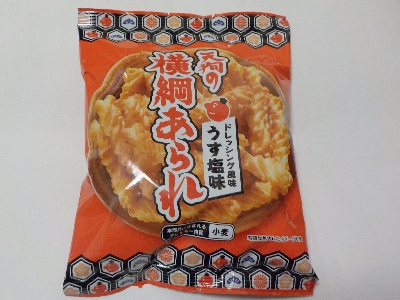
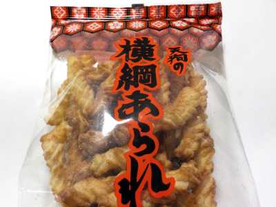

天狗製菓の天狗の横綱あられドレッシング風味うす塩味
2023/03/30

うす塩味とありますが、1袋65グラムあたりの塩分が1.2グラムあります。塩味が効いているので、ビール系飲料のおつまみにピッタリだと思いました。
ドレッシング味のせいか横綱アラレが油で揚げてあるせいかわかりませんが、ジューシーだったので満腹感もしっかりありました。
京都府京都市伏見区横大路下三栖城ノ前町57-1
2023/03/30

うす塩味とありますが、1袋65グラムあたりの塩分が1.2グラムあります。塩味が効いているので、ビール系飲料のおつまみにピッタリだと思いました。
ドレッシング味のせいか横綱アラレが油で揚げてあるせいかわかりませんが、ジューシーだったので満腹感もしっかりありました。
2023/02/04

パッケージには＜ドレッシング風味&うす塩味＞と書かれていました。コンガリと香ばしく、塩味が効いてて素朴な味だなと思いました。
社名もパッケージもレトロな感じがしていていいですね。